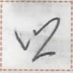

【草】
kot
【草】
kot
styles / 式样 / 様式

bitmap
位图
ビットマップ
網墨倉字
【網墨倉字】

cursive
行草书
行草書
風字
【風字】
cursive
行草书
行草書
風字
【風字】

geometric
几何图形的
幾何学的
軟型倉刀字
【軟型倉刀字】
草
rounded
圆体
丸ゴシック
骨軸倉字
【骨軸倉字】
rounded
圆体
丸ゴシック
骨軸倉字
【骨軸倉字】
dismantling / 拆分 / 分割
occurrences / 出现次数 / 出現回数 : 14
Show all occurrences / 显示所有例句 / 全ての出現例を表示
心与来下二杯之草茶加一杯之種茶。
hia1 tui2 sak2 ut2 ik2 niep1 a kot tia2 at et2 niep1 a det tia2.
Please bring two cups of teas and a cup of coffee. / 请来两杯茶和一杯咖啡。
汝力手草茶亦種茶亦牛蜜。
mua2 py hop1 kot tia2 y det tia2 y io2 sik2.
You have a choice of tea, coffee, or milk. / 你可以选择茶，咖啡或牛奶。
Words containing this character / 包含这个磷字的词语 / この燐字を含む語 :
| kot hue | 草処 | place word | grassland, meadow | ||
| kot tia2 | 草茶 | noun | tea made from leaves | ||
| hup1 kot hop1 | 木草手 | noun | tree leaves | ||
| kot hup1 | 草木 | noun | vegetation, plants | ||
| kot hop1 | 草手 | noun | leaf, leaves |